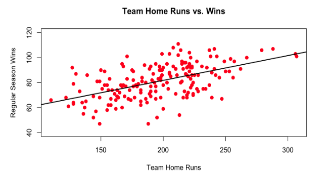
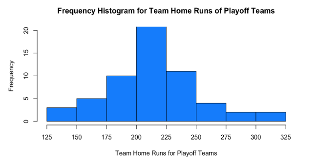
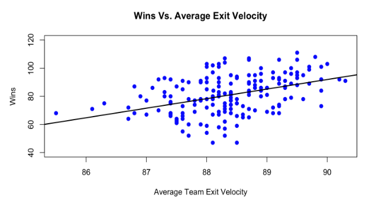

How Important is Power to a Team's Success?
by A. Carreno
Posted on 11/03/2023
Home runs are among the most exciting plays in baseball. When people go to watch a game, they’re often selfishly hoping for home runs to be hit. There’s a certain beauty to watching the ball soar high in the air and the sound of a baseball hitting the sweet spot of the bat is music to the ears. Home runs are also the only hit that will add a run to the scoreboard no matter what, making them even more special. It’s because of this unique feature that teams often try to have at least one power hitter on their team that is a consistent threat to hit home runs. The sheer offensive potential of home runs can often outweigh the high strikeout rates most of these power hitters tend to have. As people often say, Babe Ruth may have led the league in strikeouts multiple times, but nobody cared because of all the runs he batted in, games he won, and pitchers he terrorized with his consistent home run hitting. Still, are home runs and power hitting in general really that vital to a team’s success? Let’s conduct some research and analysis to find out.
In evaluating a team’s success the first thing that comes to mind is how many wins they had in the regular season. It is at the end of the day what determines whether or not a team will make it into the playoffs and give themselves a shot at winning the World Series. To see how much bearing home runs have on wins, I simply ran a linear regression analysis to see how correlated they are. To do this, I took the regular season home run totals for every team the last six full seasons along with their regular season wins. Here’s how it turned out:
In the last six full seasons, there does exist a noticeable correlation between team home run total and wins, and that correlation is positive.
As we can see from this plot, there does seem to be a positive correlation between the amount of home runs they hit and the number of games they win. Teams with a lot of home runs hit seem to have more wins than those that don’t. We can confirm this conclusion by finding the R and R^2 of the plot, which happen to be about 0.54 and 0.29, respectively. The R of 0.54 signifies a moderate positive correlation and indeed indicates that, in general, more home runs can improve the number of wins a team has. The R^2 of 0.29 tells us the regression line fits the data somewhat well, but does not explain most of the variability in the data. The R^2 is sensitive to outliers, however, and the considerable number of them in this plot may bring it down a bit. That said, the important takeaway here is that both the R and R^2 give us at least some confidence and evidence that home run totals directly affect win totals.
However, we can assure ourselves that this is true by running an analysis of variance (ANOVA) test by splitting the observations into groups. An ANOVA test compares the means of multiple groups of a dataset and determines whether the difference in the means between groups is statistically significant or due to random chance according to the resulting F-statistic and p-value. To run the ANOVA test, I created three groups: low power, average power, and high power. Depending on how many home runs a team hit, I put the number of wins that team got into one of these categories. If a team hit over 200 home runs, they were placed in the “high power” group; between 159 and 200 home runs meant they were placed in the “average power” group; and less than 159 home runs meant they were placed in the “low power” group. The mean win totals for the groups were 70.44 for low power teams, 75.4 for average power teams, and 89.12 for high power teams. From the outset, we can see that there appears to be a huge difference in wins between average and high power teams. Running the ANOVA test gives us an F-statistic of 19.69 and a p-value of 7.42e-08. The F-statistic is quite large, indicating that the difference between at least one group mean is significantly different as it is a ratio of the variability between the groups and the variability within the groups. The p-value fully backs up the assertion that the group means are significantly different as it is astronomically small; it tells us that the odds that these differences in means are simply because of random chance are about 1 in 13.47 million. You’ve probably got a better chance of being struck by lightning twice in one day to put that into perspective. All told, we can safely reject the claim that the ability of a team to hit for power has no impact on their overall success.
To get one more piece of supporting evidence, I wanted to see whether being a high power team translated to making the playoffs more often than not. I took every playoff team over the past six seasons and put their home run totals into a frequency histogram. It turned out like this:
Though variance does exist in this distribution, playoff teams seem to hit homers at a noticeably higher clip than the overall average for all teams.
As we can see, it looks like the vast majority of playoff teams are above average in power. And upon further inspection, 75% of these playoff teams hit at least 198 home runs on their way to the postseason. The mean amount of home runs hit by any team, including non playoff teams, over the last six full seasons is 194.5. The mean amount of home runs hit by playoff teams over those seasons is 215.5. That is a massive difference and does seem to signify that power plays an important role in a team’s success. A 21 home run difference in playoff versus non playoff teams is no accident. Moreover, thinking about it from strictly a baseball perspective, these results also make sense. The general consensus is that the best teams in baseball limit the amount of runs they give up and that they score more than most teams on average. In order to score runs consistently though, teams cannot always rely on singles, doubles, and triples. Depending on how good the defense of the opposing team is and the positioning of opposing fielders, balls put in play that have high odds of becoming say doubles or triples can become victim to incredible plays by fielders who are in the right place at the right time. I can’t entirely prove this, but if you have seen any baseball at all, you know that there are always at least a couple of plays each game where a batter gets robbed off a hit by an amazing play. However, what almost never gets robbed? Home runs. Therefore, it is reasonable to say that the best and safest way to consistently score runs is by hitting home runs, thus, it makes sense that many of the most successful teams hit a lot of them.
From what we’ve seen so far, power hitting does seem to be important for a team to be successful. However, there is one more test I’d like to run to truly solidify this conclusion: determining how the average exit velocity of a team affects their success (win total). The exit velocity is how fast the ball comes off the bat when a batter makes contact. As you can imagine, extra base hits like home runs tend to have higher exit velocities than singles. In fact, singles come off the bat at 90.5 mph on average, and home runs come off the bat at 103.7 mph on average according to Statcast. Harder hit balls are often harder to field and travel further on average. As such, it would make sense to assume that if a team’s batters produce higher exit velocities on average than most teams, they are likely hitting more extra base hits, especially home runs. To be sure though, let’s do another linear regression analysis for the last six full seasons.
As we can see, the correlation between average exit velocity and wins does not seem as strong as it was for team home runs and wins. That said, this plot does have an R of about 0.42 and an R^2 of 0.176. These results still indicate a moderate positive correlation between the two variables, it just isn’t as strong. As a result, we are unable to conclude that win totals are unaffected by average exit velocity, clearly there is at least a minor impact. To determine the size of this impact though, let’s return to the reliable ANOVA test.
For this test, I split the observations into three groups based on their average exit velocities and put that team’s wins for the season into a new dataset. If a team’s average exit velocity was lower than 88.2 mph, I placed them in the “soft” group; if the average exit velocity was between 88.2 and 88.9 mph, teams were placed in the “average” group; and if it was higher than 88.9 mph, the team was placed in the “powerful” group. The mean win totals for the soft, average, and powerful groups were 76.79, 79.17, and 89.16, respectively. Upon running an ANOVA test with these three groups, we get a resulting F-statistic of 15.49 and a p-value of 6.31e-07. This p-value tells us the odds the discrepancies in these group means are because of random chance are roughly 1 in 1.58 million, which are again, insanely slim odds. Most statisticians reject the null hypothesis at the 0.05 or 0.01 level, so we are definitely in the clear here. We can safely claim it’s not a coincidence that teams with higher exit velocities tend to have more wins than those with lower exit velocities. And the reasoning behind this goes back to what we discussed earlier: more hard hit balls usually equals more extra base hits and more extra base hits usually equals more runs, which leads to more wins.
Through linear regression and ANOVA testing, we were able to see the significance of home runs and average exit velocity when it comes to a team’s win totals. We determined that on average, more victorious teams hit the ball harder and out of the park more on average. Power hitting usually comes with its own set of drawbacks including more strikeouts, less consistent base runners, and poorer plate discipline, but it pays in the amount of offense it can contribute and the games it can single handedly win. Contextualizing this in the setting of today, it’s hard to think of a contending team that doesn’t feature at least one consistent power threat. The Braves have Matt Olson, the Dodgers have Mookie Betts, the Rangers have Adolis Garcia, the Phillies have Kyle Schwarber, and the list goes on and on. Regardless, the bottom line is this: power hitting might be risky, but without it, teams would be hard pressed to find reliable sources of offense to win games.